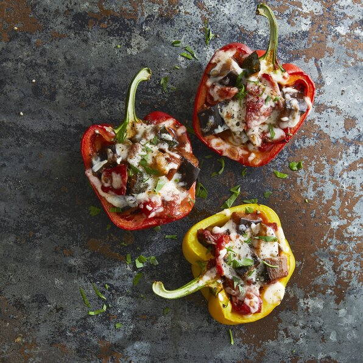

Ratatouille Stuffed Peppers

Description
Your Disney dreams come to life in a delicious and easy to make rendition of Ratatouille.
Make the famouse dish that warmed even the cold heart of Anton Ego but with way less work.
With only 25 minutes of prep time you will amaze your family with a timeless
dish that they will request time and again.
This dish features bell peppers cut in half and stuffed with vegetables cooked with wine to create
an incredible sauce. Finished off with cheese and garnish this dish will give you the confidence
to believe that anyone can indeed cook. This is a vegetarian dish that won't leave you
missing the meat.
Ingredients
- 1/4 cup extra-virgin olive oil
- 1 large onion, chopped
- 1 1/2 cloves garlic, minced
- 1 pound tomatoes, cut into 1/2-inch pieces
- 1 eggplant, cut into 1/2-inch pieces
- 3 zucchini, cut into 1/2-inch pieces
- 1 red bell pepper, cut into 1/2-inch pieces
- 1/4 cup tomato sauce
- 1 1/2 tbs herbes de Provence
- salt and pepper to taste
- 1/4 cup dry red wine
- 2 large red bell pepper, halved lengthwise and seeded
- 1 cup shredded Italian cheese blend, divided
- chopped fresh parsley, for garnish
- 1 pinch pepper
Directions
- Pour olive oil into a large pot over high heat. Add onion and garlic and saute for 2 minutes. Reduce heat and add tomatoes, eggplant, zucchini, bell pepper, tomato sauce, herbes de Provence, salt, and pepper. Stir in wine, cover, and simmer for 10 minutes. Uncover and simmer until vegetables are just tender, 12 to 15 minutes. Leave ratatouille warm in the pot until ready to use.
- Preheat the oven to 425 degrees F (220 degrees C). Arrange pepper halves, cut-sides down, in a 2-quart baking dish.
- Bake in the preheated oven for 10 minutes.
- Turn peppers so cut sides face up. Mix 2 cups ratatouille with 1/2 cup Italian cheese blend; spoon into pepper halves. Cover loosely with foil and bake until peppers are tender and filling is heated through, about 25 minutes.
- Uncover peppers; sprinkle with remaining cheese. Continue baking until cheese is melted, about 5 minutes more. Garnish with parsley and top with black pepper.